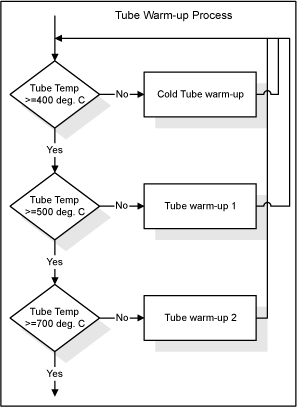
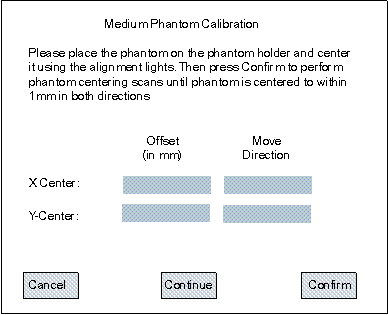

Operating Documentation
Direction 5114043-800, Rev# 9
LightSpeed 3.X Service Methods (Advanced)
Operating Documentation |
| Required Persons | Preliminary Reqs | Procedure | Finalization |
|---|---|---|---|
| 1 |
| Last Revised on: | December 15, 2004 |
Illustration 1: Calibration Flowchart: Non-Bow-tie, Bow-tie and Phantom Centering

Illustration 2: Tube Warm-Up Process Details

System performs gantry balance check. If this test does not pass, it is not recommended that you perform calibrations until the balance issue is resolved.
| Detailed calibrations generate significant heat in the gantry. If all
four (4) KV stations are to be calibrated, you must remove the two tilt regulatory
covers, located on the lower right and left sides of the gantry behind the
side covers. If the covers are not removed, a detector over-temperature condition will occur that will result in the premature termination of the calibration process. This will result in two hours of wasted time and a complete restart of the calibration procedure. | |
If all four (4) KV stations are selected for calibration, remove tilt regulatory covers (see Gantry Tilt Regulatory Covers Removal and Re-Install). Up to three (3) KV stations may be calibrated without removing the covers.
| NOTE: | (For CT/PET Discovery ST System) There are no Gantry Tilt Regulatory Covers, so the hyperlink above is disabled (i.e. will not work). |
Bring up the main menu: It is represented as an icon located on the bottom of the screen labeled as “Scanner Utilities”. Click the on-screen [SCANNER UTILITIES] button (left head).
The Main menu consists of the following three button selections:
Detailed Calibration - Brings up the Detailed Calibration screen.
Adjust CT Number - Not implemented at this time
Quit - Exits the application
Detailed Calibration menu (refer to Illustration 3)
Click the on-screen button [DETAILED CALIBRATION] . The Detailed Calibration screen consists of several rows of toggle buttons that can be selected to build the desired techniques needed to perform detailed calibration processing. These buttons are located on the top left area of the screen.
kV toggle button selections: 80 kV, 100 kV, 120 kV, and 140 kV.
SFOV toggle button selections: Small/Head and Large/Body
Slice Collimation toggle button selections: 4x1.25, 4x2.50, 4x3.75, and 4x5.00.
Focal Spot toggle button selections: Small and Large.
| NOTE: | The defaults select all techniques and aperture settings. The customer has the option to select specific kVs that are used most often. It is preferred to calibrate all kV stations. All aperture settings must be calibrated or they cannot be used for scanning. |
Illustration 3: Phantom Centering & Calibration Screen

| NOTE: | There is also an option to perform new non-bow-tie air calibrations whether data from previous non-bow-tie calibrations exist in the CAL database or not. New non-bow-tie air calibration data can be created by selecting the option button labeled as “Acquire Non-Bow-tie Air Scans” on the GUI. If this button is not selected, then the application performs a series of checks to determine whether non-Bow-tie air scans are necessary. Click the on-screen button [CONFIRM] . |
Activation (Scan List) Screen
Initially, the scrolled window on this screen displays a list of all scans that are performed for one of the following processes:
Tube Warm up processing: Cold Warm up, Warm up 1, or Warm up 2
Non-Bow-tie Air Calibration processing
Bow-tie Air Calibration processing
The Activation screen title changes dynamically to indicate which process is currently running.
If for any reason a problem is detected, the current scan and processing aborts and the last scan be reacquired. When a problem is detected, the Activation screen’s “Pause” button becomes a “Resume” button, scanning and processing of the current scan is aborted, and an error message may be displayed on the log.
At this point, selecting the “resume” button is recommended to re-acquire the last scan in order to continue the detailed calibrations. This logic is implemented for all air and phantom scanning and processing.
Phantom Centering and Calibration Screen ( Illustration 3)
This screen is displayed automatically after the air calibrations complete successfully. For each Phantom there are two functions that must be accomplished on this level of processing: phantom centering and phantom calibrations. Medium, Large and Small phantom centering and calibrations are accomplished respectively using this GUI window.
| There is a requirement that the phantom centering process may not exceed a total of 10 minutes to complete. If the process ever exceeds this time limit, detailed calibrations cannot continue and must be aborted. | |
FOLLOW THESE STEPS:
Place the correct size phantom on the phantom holder of the Gantry.
Align the phantom manually on the gantry by using the alignment lights as a guide.
On the small water phantom, make sure the alignment lights are centered on the water section. The black markers on the phantom are centered on the resolution section and the center of the water section is 60mm (2-3/8 inches) in front of the markers.
Select the [CONFIRM] button to calculate the accuracy of the alignment. A list of scans needed for phantom centering is displayed and executed. When this process completes, the Activation screen disappears and the x and y coordinate values are displayed in the “Offset” fields provided for the “X-Center” and “Y-Center” rows. These fields are located directly below the instructions field.
If either x or y coordinate value is greater than 1mm, repeat steps 2 and 3 until both values are less than or equal to 1 mm. The values in the field “Move Directions” indicate where to move the phantom on the gantry to help in aligning the phantom more accurately.
Once x and y coordinates are less than or equal to 1mm, the phantom is centered and ready to be calibrated. Select the “Continue” button to begin calibrations.
The “Cancel” button may be selected at any time while scanning is not in progress. This brings down the window and re-displays the Detailed Calibration screen.
| NOTE: | As soon as the [CONTINUE] button is selected, the application checks the X-ray tube temperature to determine whether the tube needs to be warmed up before scanning can begin. |
If removed in Step 2, reinstall the tilt regulatory covers.
No finalization required.